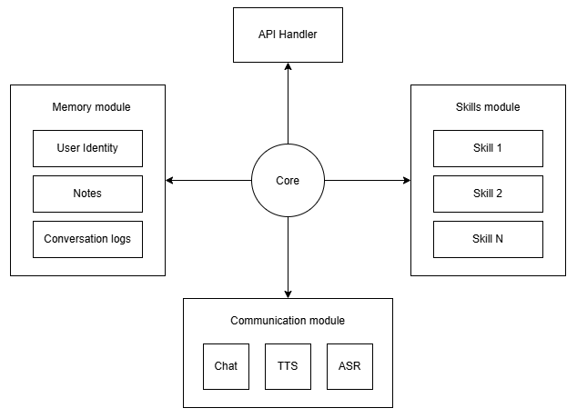

Локальный контур
Веб-панель слушает 127.0.0.1, модель запускается через Ollama. Запросы, память и пользовательские данные остаются на вашей машине.
Персональный ИИ-ассистент
«Уникальный харнесс, рассчитанный именно на общение, — не очередной универсальный агент для кода».
Голосовой и текстовый ассистент, который работает полностью локально. Понимает контекст разговора, хранит память, ведёт заметки, выполняет задачи и готовит утреннюю сводку, не отправляя данные во внешние сервисы.

Локальный ассистент для повседневных разговоров, памяти и планирования.
Веб-панель слушает 127.0.0.1, модель запускается через Ollama. Запросы, память и пользовательские данные остаются на вашей машине.
Разговор — основной сценарий. Ассистент поддерживает стриминг ответов, режим thinking и голосовой ввод с активацией по имени.
Identity и Notes хранятся на файлах и в SQLite. Контекст-билдер, саммаризация и гибридный поиск помогают удерживать нить разговора.
Навыки делятся на safe и unsafe. Записи требуют подтверждения, а действия попадают в аудит — ассистент не меняет данные молча.
Список задач, планировщик и утренняя сводка. Ассистент помогает держать день в порядке, а не только отвечает на вопросы.
Веб-панель, CLI-чат и OpenAI-compatible API со стримингом. Все каналы работают через единое ядро с памятью и инструментами.
Для тех, кому нужен личный ассистент, который не отправляет переписку и рабочие заметки в облако.
Три слоя: модель, ядро и интерфейсы. Всё запускается в локальном контуре.
Голосовые зависимости устанавливаются отдельно, флагом --voice. База и пользовательские данные лежат в data/ и не попадают в репозиторий.
Рабочий прототип уже собран. Сейчас идёт доводка голосового режима и стабилизация ядра.
| Этап | Содержание | Статус |
|---|---|---|
| M0 | Каркас, конфиг, интерфейсы, реестр, тесты, CI | Готово |
| M1 | API Handler (OpenAI-compatible, стриминг, thinking), CLI-чат | Готово |
| M2 | Tool loop, память (Identity, Notes), контекст-билдер | Готово |
| M3 | FastAPI и веб-панель | Готово |
| M4 | Логи, саммаризация, гибридный поиск | Готово |
| M5 | Навыки, safe/unsafe, аудит | Готово |
| M6 | Планировщик, to-do, утренняя сводка | Готово |
| M7 | Голосовой режим | Интеграция готова, нужна приёмка |
| M8 | Доводка и документация | Готово |
[llm.profiles.main]
data/ и models/
--voice
LumenAI развивается в закрытом контуре: исходный код и сборки пока не опубликованы. Прототип уже работает — сейчас идёт доводка голосового режима и стабилизация ядра.
О статусе проекта и доступе к прототипу можно узнать у автора.